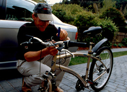
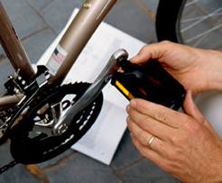

						<div class="panel panel-default">
						<div class="header clearfix">
							<nav>
								<ul class="nav nav-pills nav-stacked">
									<li role="presentation" ng-class="{ active:assemble.isSelected(1) }">
										<a href ng-click="assemble.selectTab(1)">Step 1: Handlebars</a>
										<div class="panel panel-default" ng-show="assemble.isSelected(1)">
											<div class="panel-body">
												<p></p>
												<p>Remove the small black plastic plug on top  of the Stem Bolt. Loosen Stem Bolt by turning 1-3 turns clockwise. Now insert  Handlebar Stem into the Head Tube of the bicycle frame. Leave about 2 inches  showing - never raise above the Minimum Insertion Line as marked on Stem. Use 6  mm (large) Allen key to firmly tighten the Stem Bolt. Replace black plug.</p>
												<p>Adjust Handlebar Tilt Arm by loosing the  bolt on the underside of the handlebar. Raise handlebar until the arrow on the  Tilt Arm points to 40º. Firmly tighten. If necessary, readjust tilt later.</p>
											</div>
										</div>
									</li>
									<li role="presentation" ng-class="{ active:assemble.isSelected(2) }">
										<a href ng-click="assemble.selectTab(2)">Step 2: Seat Post</a>
										<div class="panel panel-default" ng-show="assemble.isSelected(2)">
											<div class="panel-body">
												<p></p>
												<p>Release the Seat Post Quick Release on the  Seat Tube by opening the Quick Release Lever. Insert the Seat Post into the  Seat Tube and lower the Seat Post all the way. Never raise above the Minimum  Insertion Line as marked on Post. Adjust seat height later.</p>
												<p>Keeping the seat parallel with the Frame  turn the Tension Adjusting Nut clockwise with one hand while holding the Quick  Release Lever with the other hand. Turn the Tension Adjusting Nut until it is  as tight as you can get it by hand.</p>
												<p>Now close the Quick Release Lever. The full  force of the Quick Release Cam is required. Quick Release Lever should be  pointed toward the front wheel. Check Rear Reflector to make sure it's straight  and tight. </p>
											</div>
										</div>
									</li>
									<li role="presentation" ng-class="{ active:assemble.isSelected(3) }">
										<a href ng-click="assemble.selectTab(3)">Step 3: Front Wheel</a>
										<div class="panel panel-default" ng-show="assemble.isSelected(3)">
											<div class="panel-body">
												<p></p>
												<p>Remove the plastic protective spacer from  the bottom of the Fork and be protective caps on wheel are removed. </p>
												<p>Squeeze the Brake Arms together to release  the Brake Cable. Place the threaded axles of the Wheel Hub in the Fork  Dropouts. Make sure that the tire tread direction matches the direction of the  tread on the Rear Wheel.</p>
												<p>Take the Front Wheel Quick Release and  remove the Tension Adjusting Nut and one Spring and slide the Front Wheel Quick  Release Skewer through the Wheel Hub from the chain side and replace the Spring  and Tension Adjusting Nut so that the wide section of the Spring is against the  Tension Adjusting Nut. Make sure the Lever is located in the round portion of  the cam bushing.</p>
												<p>Holding the Quick Release Lever in the open  position with your right hand, tighten the Tension Adjusting Nut with your left  hand until it is finger tight against the Fork Dropout. Before closing the  Quick Release Lever, make sure that there is an equal gap of about 1mm between  the Brake Pads and Wheel Rim.</p>
												<p>Now close the Quick Release in while  holding the wheel steady. If the action of closing the Quick Release lever does  not leave a firm impression in the palm of your hand, the tension is not  sufficient. Tighten the tension and close the Quick Release. </p>
												<p>Since the wheel could pull to one side  during Quick Release clamping, do a visual inspection and spin the Front Wheel  to ensure the wheel is centered between the Fork and there is an equal gap  between brake Pads and Rim. If not centered or rotating freely, release the  Quick Release and repeat.</p>
											</div>
										</div>
									</li>
									<li role="presentation" ng-class="{ active:assemble.isSelected(4) }">
										<a href ng-click="assemble.selectTab(4)">Step 4: Pedals</a>
										<div class="panel panel-default" ng-show="assemble.isSelected(4)">
											<div class="panel-body">
												<p></p>
												<p>There is a Right Pedal marked "R"  and a Left Pedal marked "L". Place the Right Pedal into the Right  Crank Arm ( same side as the Chain). Use your fingers to get started and gently  turn the Pedal Nut in a clockwise direction. Using the 15mm wrench provided,  firmly tighten the Pedal Nut.<br>
												  </p>
												<p>Repeat with Left Pedal in the Left Crank  Arm turning the pedal Nut in a counterclockwise direction. Tighten with 15mm  wrench.</p>
											</div>
										</div>
									</li>
								</ul>
							</nav>
						</div>
						</div>
